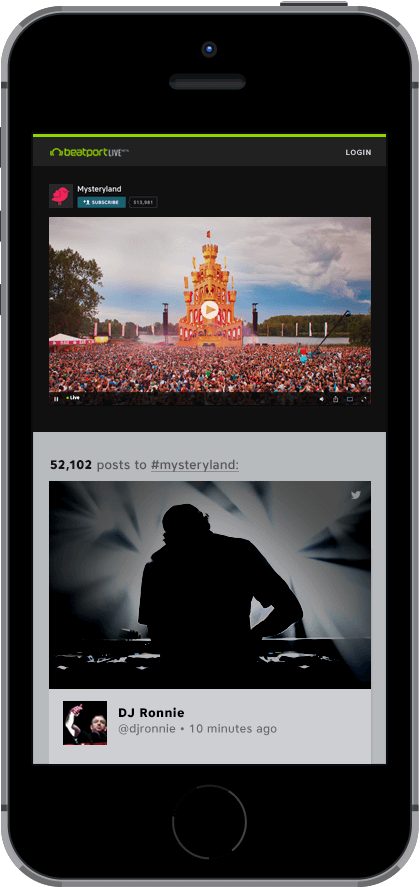
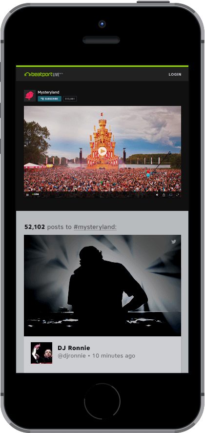

Case Study
Beatport Live
Live is the lastest product on the Beatport roadmap, a streaming platform for DJs to broadcast their live sets.
In 2004, Beatport began as an online store and news hub for electronic music culture. When it was purchased by SFX in 2013, it became part of a larger umbrella that included ticketing, live events and streaming music. As more energy was being placed around large festivals, SFX strategized how to develop tools to deliver the live experience to fans around the world.
In January 2015, I came on board to create a distinctive theme and overall design language for the new product, consistent across streaming channel pages, branded events, DJ dashboards, ads, and a Mac app for OSX. My first challenge was to design and code the web-based channel pages for artists and festivals and incoporate the colors and frenetic feel of a live event:
 

While web production continued, I also started sketching designs for the OSX app. Using native audio and video sources, the app lets DJs stream their live shows, queue upcoming events, and track stats in real time.

As design was being finished up, I put together a marketing page to promote new features and invite DJs to be whitelisted for early access: